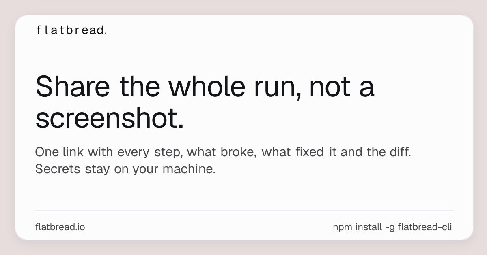
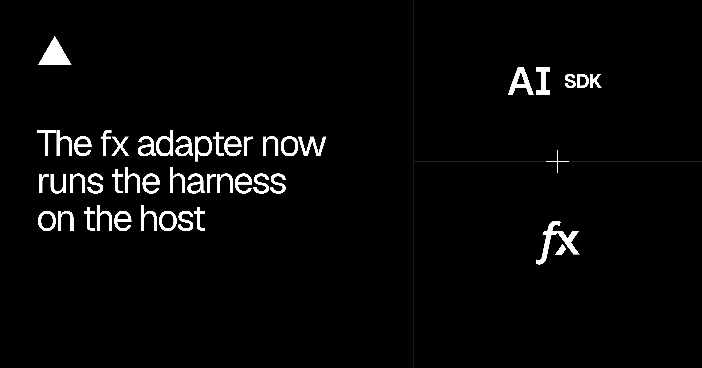
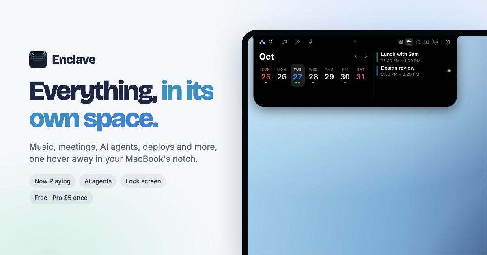
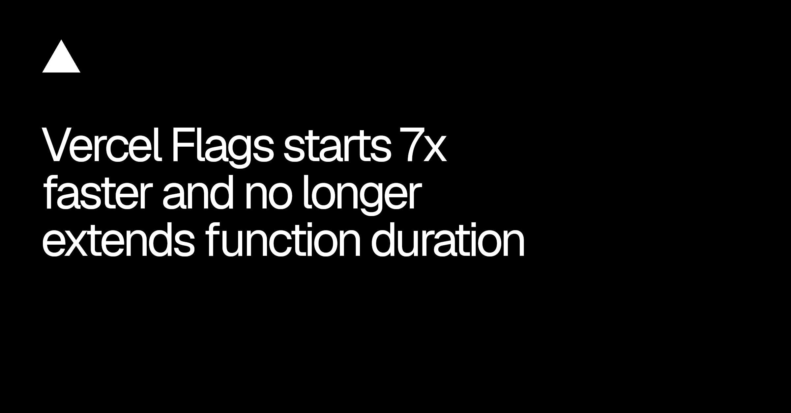

今天最有意思的，不是 agent 又会了什么，而是它终于开始交代自己在哪里干活、能碰什么、花谁的钱。Webflow 把 agent 的“在场”做进画布；Vercel 把模型请求留在 host，把文件和 shell 关进 sandbox；GitHub 则把自动选模型背后的计费写到了台面上。
这些更新看起来分散，其实都在补同一块：执行过程要能被人看见，权限边界要能被人理解，账单也不能等月底再解释。能力已经够多了，现在更缺的是一套不让团队心里发虚的控制面。
Copilot Fusion 已正式开放给所有 Copilot 套餐。它不再让人手动挑单一模型，而是按 Standard、High、Max 三档努力程度，在 Single、Cascade、Critique 三种流程里调度多个模型。管理员仍能限制它可用的模型，也能把某一档 Fusion 设为默认。
这里有个容易被“自动选模型”四个字盖住的细节：每个被调用的模型都按各自标准费率计费，付费套餐目前只是限时打七折。省掉的是选择成本，不是模型成本。团队真要把它设成默认，先看一周真实任务的模型构成和 AI credits，再决定哪一档适合日常使用。
GitHub Enterprise 现在可以把 Copilot 权限直接带给每个 licensed user；没有 Enterprise 席位的人，也能用每月 10 美元的 Copilot Standalone 接入同一套能力。听起来像“包含”，但每席没有附送 AI credits，第一次请求就开始吃企业预算。
预算见底后，代码补全和 next edit suggestion 还在，Chat、code review 和 cloud agent 会停。这种拆法很诚实：权限、用量和功能降级是三件事。以后做 AI 套餐页，别再用一个“已开通”把它们揉成一团。

Flatbread 把一次 Claude Code、Codex 或 Cursor 会话整理成一个链接：用户问了什么、agent 试过什么、哪里坏了、怎么修好的，以及最后的 diff，都在一页里。敏感信息先在本机清理，上传前还要人工确认；另一个 agent 也能从这条记录继续跑。
难得的不是“分享会话”，而是它没把失败步骤删掉。团队评审最需要看的，往往正是 agent 走过哪条弯路、为什么后来改了方向。还没拿真实项目试过，先不替它背书；但这个产品定义比“贴一张成功截图”靠谱多了。

Vercel 重写了 AI SDK 的 fx adapter：harness 和模型请求跑在应用进程，文件系统与 shell 操作留在 sandbox，模型凭证也不再进入 agent 执行命令的环境。新版还补了内置工具过滤、执行中追加指令、结构化输出、图片结果和跨 host 恢复会话。
这比“全都塞进沙箱”更像一条能维护的边界：凭证归 host，危险动作归 sandbox，人还能在中途改口。设计 agent 控制面时，至少要把这三层分开画，不要只放一个笼统的 Allow all tools。
Webflow 以前已经能在 activity log 里追溯 agent 改了什么，现在又把 agent 的实时位置放进画布，显示方式和队友 presence 一样。通过 Webflow MCP 接入的 agent 在哪里工作，其他人能当场看见；这项能力面向所有用户，不额外收费。
光标当然不能解决冲突，但它补上了关键的一秒：改动还没发生时，人就知道“这里有人在动”。协作产品如果只做事后日志，用户看到的是事故报告；presence 才是正在施工的路障。
Webflow 的组件 slot 现在可以预装一个默认组件。主卡片里把按钮设为默认，之后新放入页面的卡片就自带按钮；主组件更新默认值时，仍在使用该默认值的实例会跟着更新，营销同学也可以替换、清空或一键复原。
空 slot 对设计师是自由，对接手的人常常只是“不知道该放什么”。默认值把推荐用法直接塞进组件，而不是塞进另一页规范文档。它和 slot restriction、show / hide control 一起看，才是一套能交给非设计师使用的组件边界。

Enclave 把 MacBook 刘海做成一个随用随开的状态台。音乐、会议、下载已经够热闹，它还接了 Claude Code、Codex、Cursor、GitHub 和 Vercel：agent 等审批、测试结束、部署失败，都能在这里冒一下，再安静收回去。官网写明免费版可长期用，Pro 是一次性 5 美元，处理尽量留在本机。
往刘海里塞“所有东西”很容易变成新的通知中心，但 agent 等人批准这件事确实适合放这里：它短、紧急、处理完就消失。还没实测权限和误触，先记产品取舍，不急着夸执行质量。
Vercel Connect 新增 Resend、X、Twilio、Notion 和 Telegram webhook triggers。它负责验证请求、处理 provider heartbeat 和 verification challenge，再把事件转给项目 endpoint；Resend 与 Telegram 可以自动注册，其他三家还得回 provider 后台完成设置。事件进来后，Observability 里能直接看 live log。
这不是最性感的更新，却会直接缩短交互原型的接线时间。邮件到达、Telegram 消息、Notion 更新都能变成产品状态，不必每次先写一层 webhook 胶水。省下来的不是代码量，是“这个原型到底能不能接真实事件”的等待。
Vercel Firewall 现在把 AI crawlers 和 AI assistants 分开管：前者收集内容做索引或训练，后者在用户发起搜索、提问时临时取页面。两类 bot 可以分别 log 或 block，改动还能先用 vercel firewall diff 检查再发布；所有套餐都能用。
“允许 AI / 禁止 AI”这个开关早就不够了。内容团队可能不愿意被批量抓去训练，却希望用户通过助手找到自己的文档。策略页里最好直接列出对象、用途、动作和最后更新时间，别让品牌、法务和工程各自维护一份猜测。

Vercel Flags 把 flag datafile 跟部署一起打包，函数启动时先在本地读版本，不再为确认最新 revision 多等一次网络。官方内部测试里，p75 冷启动初始化从 70ms 以上降到 10ms，冷热调用的 p99 flag read 低于 1ms。usage reporting 也不再靠 waitUntil 拖住函数时长。
实验开关最烦的不是慢到不能用，而是每次只多几十毫秒，最后没人敢查它。这个更新把“观察实验”从请求尾巴上挪开了。数据来自官方内部测试，真实收益还得看自己的 runtime 和地区；升级到 @flags-sdk/vercel 1.5.3 后再量一次，别拿 7x 当通用承诺。
视频：YouTube 原片https://www.youtube.com/watch?v=Xe3Jt8d2xnU｜来源：Stash 文章https://www.stashmedia.tv/animation-icon-bill-plympton-is-back-with-a-trippy-music-video-for-average-friends/
Bill Plympton 八十岁了，画面还是一眼就认得出来：铅笔线会抖，颜色不填满，人物随时能被拉成长蛇、嘴唇、眼球和一排重复的队列。这支片由 Kickstarter 支持，并在 2026 Woodstock Film Festival 首映，没有试图把手绘修得像矢量动画一样干净。
真正好看的地方，是每次变形都踩着歌曲的短句发生：一段旋律不是配一组装饰，而是触发一个视觉笑话。做产品动效也能借这个方法——先给一个状态配一个动作规则，再让规则在不同对象上变形；别从“这一屏加什么特效”开始。
Xe3Jt8d2xnU。核验说明：GitHub、Webflow、Vercel、Flatbread、Enclave 与 Stash 官方页面于 2026-10-30 回读。正文嵌图原始宽度为 1200–4800px，并逐张目视检查；主视频为 YouTube 原片，飞书发布使用 URL Preview，不插入独立封面图。